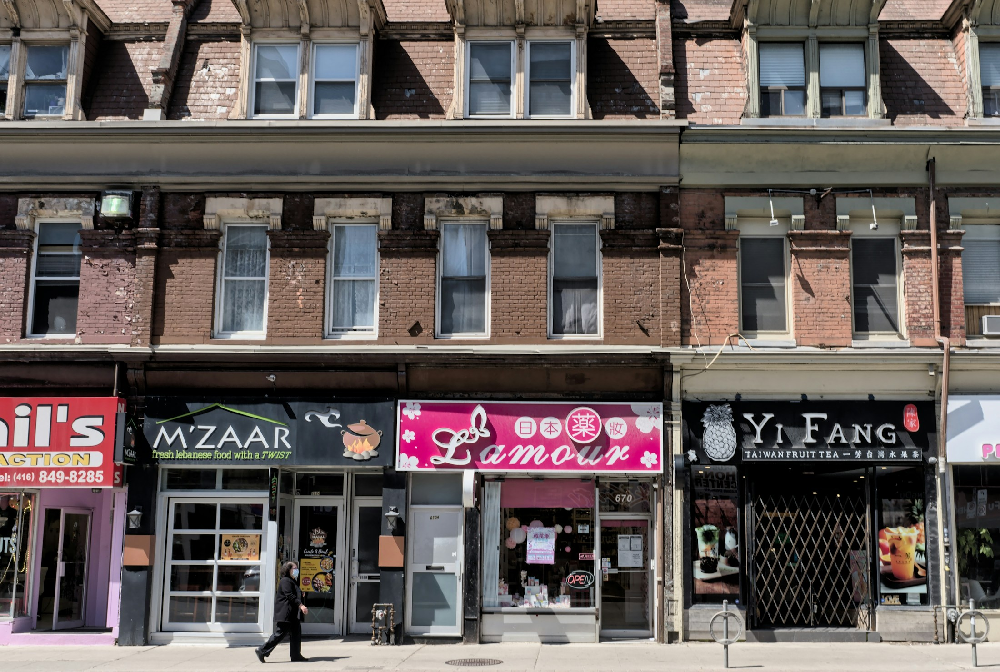

The right search
Define your geography, industry, and ideal business. Your criteria guide where we look.
Business sourcing, with a personal approach.
For brokers, real estate professionals, and acquisition teams. Tell us who you want to reach. We find relevant businesses and help open the conversation.

A useful connection needs a reason to exist. We shape the search around your objective, then bring the business and its owner into focus.
Define your geography, industry, and ideal business. Your criteria guide where we look.
Relevant contact details and business background help you see why an introduction could matter.
OpportunityDesk makes the first contact, opening the door for you to take the conversation forward.
Our current focus is baby-boomer-owned businesses and the people exploring what comes next.
Ownership context helps guide a search. An owner’s interest in selling is established through a conversation.
Find the search that fits your workOne clear objective gives the search direction. We take it from there, one considered step at a time.
Build your briefTell us who you want to reach, where to look, and what makes a good fit.
We draw on our database and network to identify relevant businesses and owners.
We reach out first. You take the next step when there’s a reason to connect.
Explore the search that fits your work.
Give your next introduction a clear purpose.
For your next owner conversation
Build a search for owner-led businesses in your market. Start with the industries and locations you serve, then explore relevant ownership-transition opportunities.
Find independent business owners in my region for an initial conversation about ownership transition.
Know what to expect from your next search.
The current focus is identifying baby-boomer-owned businesses and potential ownership-transition opportunities. Inclusion does not mean an owner is ready to sell. That intent needs to be established through a conversation.
OpportunityDesk also sources potential customers, suppliers, and specialist service providers. Choose “Another sourcing need” in the brief and describe who you want to find.
Start with your objective, target geography, industry, and the kind of person or business you want to reach. Add any exclusions or requirements that would change what a good fit looks like.
Your brief downloads as a text file. You can review and share it with your sourcing team. Downloading does not send an enquiry or start outreach.
A few details give your search direction. Build a brief around your objective and the businesses you want to find.
Ready to review and share. No account required.